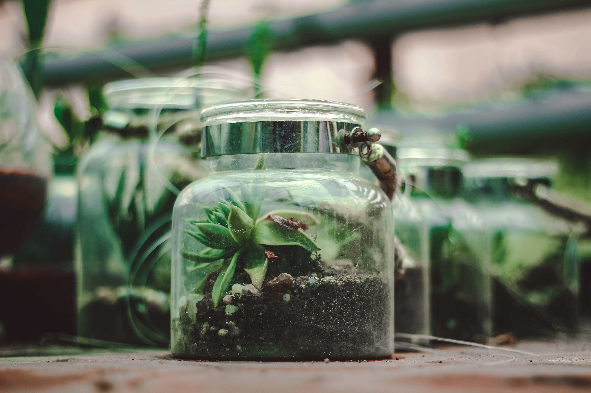

Las 3 R fundamentales
Reducir
Reducir
Consumir menos. Evitar comprar cosas que no necesitamos y reducir el uso de plásticos de un solo uso.
Reutilizar

Reutilizar
Darle una segunda oportunidad a los objetos. Usar frascos de vidrio para guardar especias o ropa vieja como trapos.
Reciclar

Reciclar
Separar los materiales para que puedan ser procesados industrialmente y vuelvan a ser materia prima.